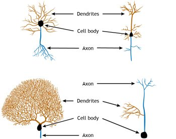
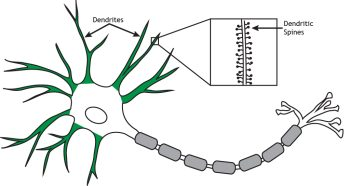
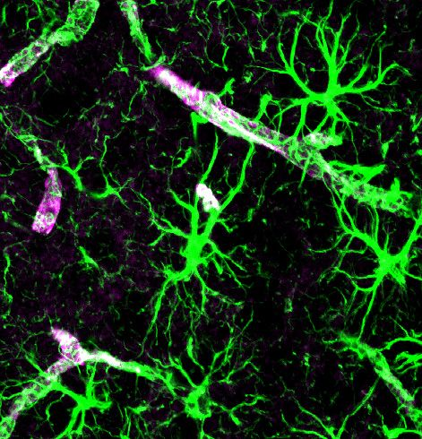
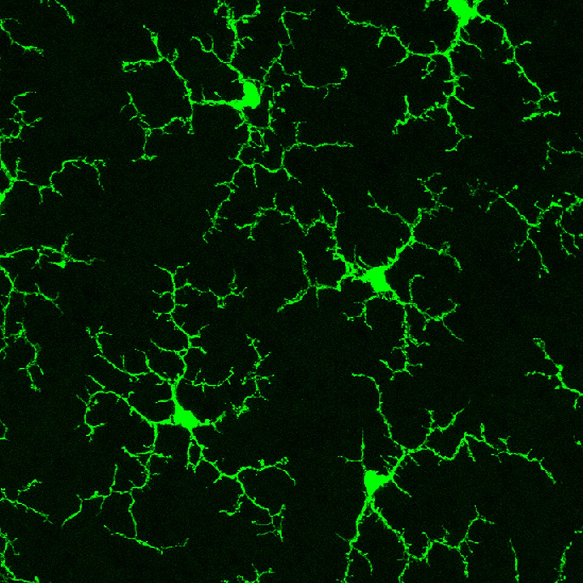
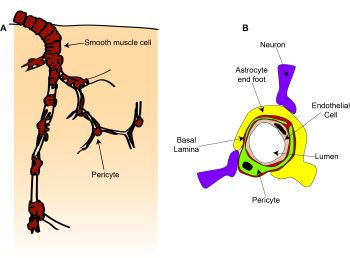

Under the microscope: cells of the nervous system
Learning Objectives
By the end of this chapter, you will be aware of:
- the main cells in the nervous system
- what these cells look like
- what their functions are.
In each region of the central and peripheral nervous systems are specialised cells that perform or support the fundamental function of the nervous system – the detection of information about the world, integration with information about the internal body state and past experience, and the generation of an appropriate behaviour. These cells can broadly be classified as either neurons or glia.
Neurons are the cells that perform the signalling and information processing. They detect inputs, integrate information, and send signals to other cells, be they other neurons (forming neuronal circuits) or non-neural cells (such as muscles or endocrine cells), to produce a behavioural or physiological effect. Glia or glial cells play numerous supporting roles for the neurons. This support was originally thought to be structural – the term ‘glia’ is derived from the Greek for ‘glue’ – but is now appreciated to be highly complex, involving dynamic communication between glia, neurons and other cell types, and is able to modulate neuronal communication. In addition to neurons and glia, neural tissue contains a large number of vascular cells. As we saw in Chapter 2, Exploring the brain, brain tissue is densely vascularised in order to provide sufficient metabolites for energy-hungry neurons to function correctly.
Neurons
The basic form of a neuron is shown in Fig 2.24. It has a cell body, or soma, with branching processes called dendrites and a thin process called an axon. The axon can also be branched, forming axon collaterals. We talked in the last chapter (Exploring the brain) about the general function of the brain being to take in information, perform a computation on that information to work out what to do next, then to produce an output. As mentioned above, this same ‘input-computation-output’ function is also performed by individual neurons.
The dendrites, or dendritic tree, are where most inputs to the cell are received. These inputs are integrated across the dendritic tree and soma before the cell ‘decides’ whether the inputs are strong enough to trigger an electrical output signal down the axon (the action potential, see Chapter 5: Neuronal transmission). The site of this decision is the top of the axon furthest from the terminals, termed the axon initial segment. The action potential travels along the axon to the axon terminal. The axon terminal is very close to, but not touching, a dendrite of another cell. This tiny gap is specialised for passing messages between two cells and is called a synapse. At the synapse, action potentials cause release of a chemical messenger – a neurotransmitter – which transmits the signal across the gap to the next cell in the circuit.
Neuron morphology affects computation
All neurons have this basic morphology, but nevertheless come in a multitude of shapes and sizes.

Most neurons are multipolar neurons, with a branched dendritic tree and a single axon. Some neurons, particularly sensory neurons (e.g. in the retina), are bipolar having a single dendrite coming out from one end of the soma, and a single axon from the other (though these may be branched near their ends). Pseudounipolar neurons have a single process, classified as an axon, which receives inputs at one end and releases transmitter at the other end. These different shapes and sizes alter how neurons perform computations.
Because the job of a neuron is to add up all its inputs and decide whether to fire an output action potential, the number of these inputs and where they are located affects how this summation happens.
For example, in the cerebellum (Figure 2.12), the Purkinje cells receive inputs from granule cell axons and axons from deep cerebellar nuclei in the pons, called climbing fibres.
The climbing fibres are very branched and make lots of connections (synapses) to each Purkinje cell, while the granule cells’ axons, called parallel fibres, are simple and form only a single synapse to each Purkinje cell. This means that the connection between a single granule cell and a Purkinje cell is weaker than the connection between the climbing fibre neuron and the Purkinje cell.
Another way that neuron morphology can affect the computations it undertakes can be seen if we zoom in on the dendrites (Figure 2.27).

Some dendrites are covered with small protrusions, called dendritic spines, whereas others are smooth. Synapses can form on to the spine, or onto the neck of the spine, and this means that some inputs can ‘gate’ the effect of other inputs, altering their impact on the neuron.
Different classes of neurons
There are many different ways in which neurons can be classified and subdivided, depending on what aspect of neuronal function is being focussed on. As we have seen above, we can define neurons by their morphology, and morphology can also be used to further classify the multitude of multipolar neurons: For example, pyramidal cells have a characteristic pyramidal shaped soma, long dendrite pointing upwards (an apical dendrite), tufty basal dendrites, and an axon that often forms several collaterals. Purkinje cells of the cerebellum have a round soma, a flat highly branched dendritic tree at the top of the soma and a single long axon. Granule cells have a small cell body, a simple dendritic tree and an axon that splits in two. Chandelier cells have a highly branched axon arbour that forms distinctive ‘candle-like’ connections with the initial segments of lots of axons.
 and granule cells (B) from pigeon cerebellum by Santiago Ramón y Cajal, 1899. Instituto Santiago Ramón y Cajal, Madrid, Spain. Images available from:https://commons.wikimedia.org/wiki/File:Hippocampal-pyramidal-cell.png; https://commons.wikimedia.org/wiki/File:Mouse_Chandelier_Cell.jpeg; https://en.wikipedia.org/wiki/Granule_cell#/media/File:PurkinjeCell.jpg")
We can also define neurons by their effect on other neurons, being excitatory or inhibitory, depending on whether they make the neurons they connect to more or less likely to fire an action potential (more of this in Chapter 5: Neuronal transmission).
Of the examples given above, pyramidal cells and granule cells are excitatory and Purkinje cells and chandelier cells are inhibitory. Neurons can also be classified by the type of neurotransmitter they release: glutamatergic neurons release glutamate, GABAergic neurons release GABA (gamma aminobutyric acid), dopaminergic neurons release dopamine, and so on. As we will see later, these categories broadly overlap: glutamatergic neurons are excitatory, because glutamate excites cells and GABAergic neurons are inhibitory, because GABA inhibits cells. However other neurotransmitters such as dopamine can have different downstream effects depending on what proteins that cell expresses at the synapse.
Neurons can also be classified based on their connectivity and role in a circuit, but this can get complicated! Neurons that project a long way to a different brain region are termed principal neurons, while those that project locally are termed interneurons. Principal neurons are often excitatory, but not always (for example Purkinje cells output information from the cerebellum and are inhibitory). However, in some brain areas it is hard to decide whether a cell should be termed an interneuron or not. Is it helpful to call neocortical pyramidal cells that project to far cortical areas ‘principal cells’ but very similar cells that project to the next cortical column ‘interneurons’? Are cerebellar granule cells interneurons because they project within the cerebellum, though they project to a distinct cell layer? Instead, the term ‘interneuron’ is only commonly used for inhibitory cells, referred to as inhibitory interneurons. A chandelier cell is an example of an inhibitory interneuron. Excitatory cells in local circuits are instead usually referred to by other features, e.g. location and morphology (e.g. a Layer 5 neocortical pyramidal cell as distinct from a Layer 2/3 pyramidal cell in the example given above).
Glia
There are five main types of glial cells.


Astrocytes can also release many substances onto neurons and other cells (e.g. ATP, lactate, glucose), modulating their activity and providing metabolic support. Specialised astrocyte processes, termed ‘end feet’ communicate with local blood vessels, altering local blood flow and taking up glucose from the blood. These end feet surround blood vessels, forming part of the BBB, and others extend to the surface of the brain, forming a thin layer just under the pia. This barrier of astrocyte end feet is termed the glia limitans, and stops (or regulates) molecules and cells from entering or leaving the nervous tissue. Astrocytes also react to damage to brain tissue, becoming ‘activated’ and expressing different molecules when they are exposed to infection. They can form a scar around sites of damage. While this can be helpful, it also causes problems if cells remain activated for a long time, and the scar tissue that forms can stop neurons from making new connections through.
Oligodendrocytes and Schwann Cells perform similar roles in the CNS and PNS respectively. Both cells wrap layers of a fatty substance called myelin around neuronal axons. Oligodendrocytes do so by sending multiple myelinating processes to nearby axons, whereas Schwann cells in the PNS each have only one myelinating process. These layers of myelin insulate axons allowing action potentials to be conducted more quickly and robustly (see Chapter 5: Neuronal transmission).

Being so closely associated with axons, oligodendrocytes and Schwann cells also provide support to axons by releasing some molecules and taking up others, regulating the extracellular environment around axons in a similar manner to the role of astrocytes at synapses. In multiple sclerosis, the body’s immune cells seem to attack oligodendrocytes, leading to demyelination of axons. This impairs signalling in the axons that were ensheathed by the damaged cells, causing a variety of neurological problems, depending on which axons are affected and what signals they were carrying.

Microglia are small cells which play an important role in repairing damaged brain tissue. Unlike the rest of the body, immune cells cannot readily enter the brain from the blood because they are prevented by the BBB. Instead, microglia act as the brain’s resident immune cell. Their processes constantly extend and retract, surveying the brain for signs of damage or infection. When they find a site of damage, they ‘activate’ and migrate to this region, forming a barrier between healthy and damaged tissue and removing debris of dying cells. Microglia are also often associated with synapses and blood vessels, and increasingly appreciated to have important roles not just in controlling damage, but in shaping normal brain function as well, regulating synaptic transmission and signalling to blood vessels. Like astrocytes, while microglial responses to damage are usually thought to be beneficial, when they are activated for a long period of time they can themselves be harmful. This may happen in disease such as Alzheimer’s, and after a stroke.
The last type of glial cell is the ependymal cell, which we discussed briefly in the last chapter. These cells line the ventricles and produce CSF.
Vascular cells
We heard in the previous chapter that the brain contains a dense vascular network to provide a constant, tightly regulated supply of energy (mainly oxygen and glucose) to the brain. The main cells that make up the blood vessels are endothelial cells, which form the vessel wall next to the blood, and vascular mural cells: smooth muscle cells on larger vessels (arteries and arterioles) and pericytes on smaller vessels (capillaries), which wrap around endothelial cells (Figure 2.33).

As we heard earlier, endothelial cells form tight junctions with adjacent endothelial cells and with pericytes, forming the BBB. A major function of endothelial cells is to regulate entry of cells and molecules across the BBB, as well as to clear waste molecules from the brain into the blood. They regulate the entry of small molecules by expressing different transporter proteins which allow certain molecules to cross the BBB into the brain. To allow immune cells into the brain, endothelial cells express proteins that stick to immune cells in the blood which then crawl between or through the endothelial cells.
Another function of endothelial cells is control of blood flow. Endothelial cells can respond to signals in the blood or the brain to produce molecules that contract or dilate smooth muscle cells or pericytes, altering the diameter of blood vessels and changing blood flow.
Smooth muscle cells are ring-shaped cells that wrap around the vessel, while pericytes have a distinct cell body and processes that extend along and around the blood vessel. In addition to responding to signals from endothelial cells, these smooth muscle cells and pericytes can also constrict and dilate in response to signals from neurons and astrocytes, changing blood flow to match alterations in neuronal activity. Pericytes are also important for stabilising newly formed-blood vessels and work together with endothelial cells to control the BBB.
The brain is full!
All these cells with their complex structures are often shown in cartoons with lots of space between them. In reality, however, the different cells’ processes are closely intertwined and crammed together, taking up almost all the available space. We can see this experimentally by looking at 3D reconstructions from electron micrographs – images of sequential slivers of a very small bit of tissue taken with an electron microscope.

In these image sequences, structures can be labelled and traced in each image, and then assembled to get a reconstruction of the different cells in a small volume of tissue. From such images we can see in superb detail how different structures connect, e.g. which dendrites an axon contacts. However, tracking and reconstructing every process in even a small volume is very computationally expensive, and it’s not yet possible to do this for even a whole cortical column, never mind a whole brain or brain region.
Key Takeaways: Cells of the nervous system
Neurons all have a soma, axon and dendrites but come in lots of shapes and sizes, and produce different neurotransmitter molecules, meaning they can perform lots of different computations.
There are 5 different types of glia in the brain (astrocytes, oligodendrocytes, Schwann cells, microglia and ependymal cells), which have many roles, including:
- controlling the extracellular environment for neurons (astrocytes, oligodendrocytes, Schwann cells, microglia)
- providing physical and metabolic support (astrocytes, oligodendrocytes, Schwann cells)
- insulating axons to allow fast neuronal transmission (oligodendrocytes, Schwann cells)
- detecting and combatting infection and tissue damage (microglia, astrocytes)
- contacting and communicating with blood vessels (astrocytes, microglia)
- producing CSF (ependymal cells)
Endothelial cells, smooth muscle cells and pericytes form a dense network of blood vessels and control the brain’s energy supply, as well as what cells and molecules can go between the blood and the brain tissue.